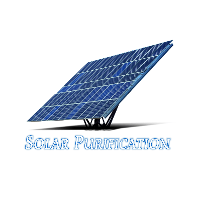

Solar Water Purification

Fill a bottle or a vessel and expose it to the sunlight for 6 to 8 hours horizantally so that maximum amount will be exposed.It will kill bacteria,fungus,etc during that time and it is free of cost.Using UV light to purify water is great for neutralising microbiological contaminants such as bacteria, viruses and cysts. They are some other uv operated techniques using batteries and are usually small (often in a pen form) and lightweight. There are also versions of the technology in water bottles as well. The some uv processes are very quick, usually taking 60-90 seconds.
What does UV light kill:
- Bacteria
- Virus
- Protoza
- Cysts
What doesn’t UV light remove:
- Chemicals
- Heavy metal sediments
- Debris
Advantages of UV light:
- Small and lightweight
ఒక సీసా లేదా పాత్రను పూరించండి మరియు దానిని 6 నుండి 8 గంటల పాటు అడ్డంగా సూర్యరశ్మికి బహిర్గతం చేయండి, తద్వారా గరిష్ట మొత్తం బహిర్గతమవుతుంది. ఇది ఆ సమయంలో బ్యాక్టీరియా, ఫంగస్ మొదలైనవాటిని చంపుతుంది మరియు ఇది ఉచితం.నీటిని శుద్ధి చేయడానికి UV కాంతిని ఉపయోగించడం బ్యాక్టీరియా, వైరస్లు మరియు తిత్తులు వంటి సూక్ష్మజీవ కలుషితాలను తటస్థీకరించడానికి గొప్పది. అవి బ్యాటరీలను ఉపయోగించి నిర్వహించబడతాయి మరియు సాధారణంగా చిన్నవి (తరచుగా పెన్ రూపంలో) మరియు తేలికగా ఉంటాయి. వాటర్ బాటిళ్లలో కూడా టెక్నాలజీ వెర్షన్లు ఉన్నాయి. ప్రక్రియ చాలా త్వరగా జరుగుతుంది, సాధారణంగా 60-90 సెకన్లు పడుతుంది.
UV కాంతి ఏమి చంపుతుంది::
- బ్యాక్టీరియా
- వైరస్లు
- ఫంగస్
- తిత్తులు
UV లైట్ ఏమి తీసివేయదు:
-
రసాయనాలు
- మెటల్ అవక్షేపాలు
-
శిధిలాలు
UV కాంతి యొక్క ప్రయోజనాలు:
- చిన్నది మరియు తేలికైనది